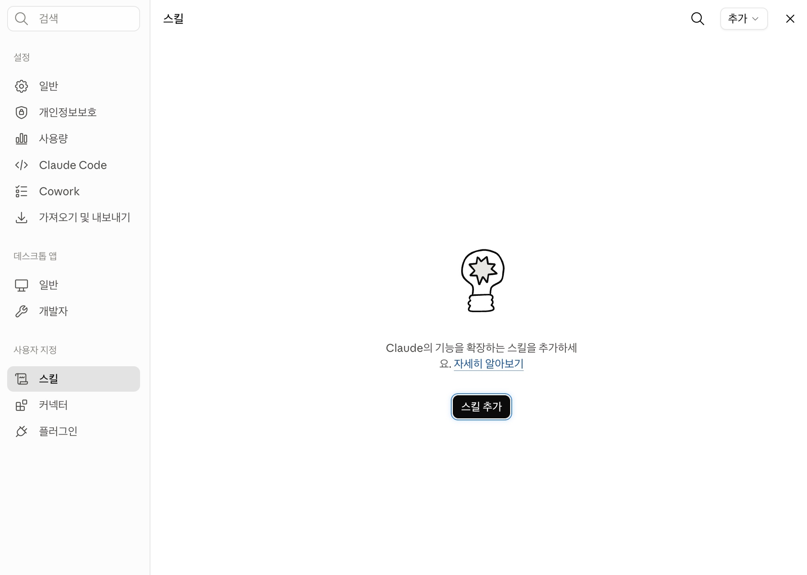
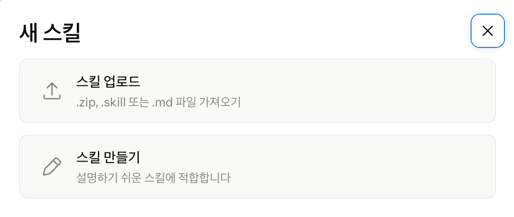
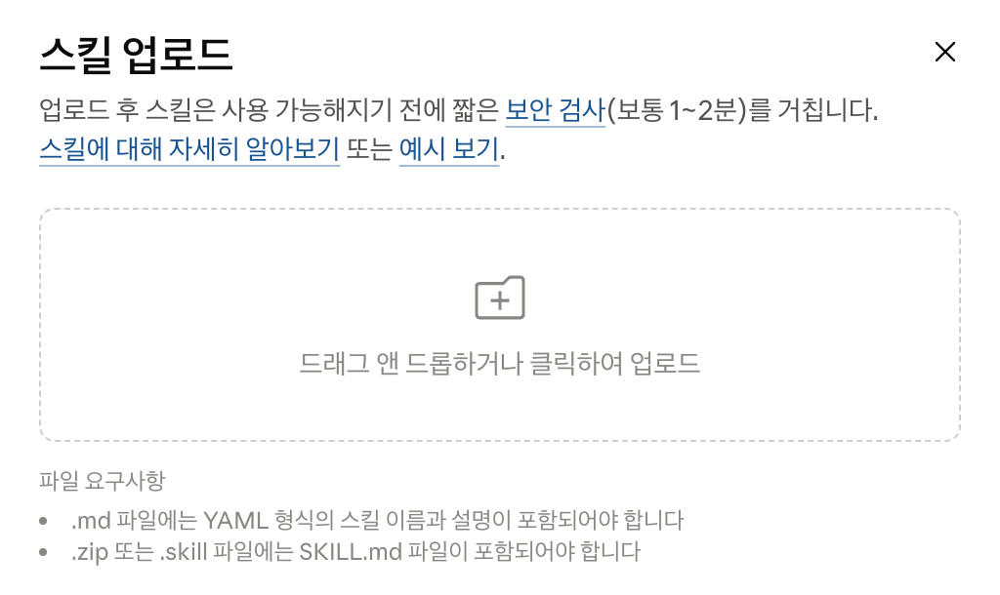
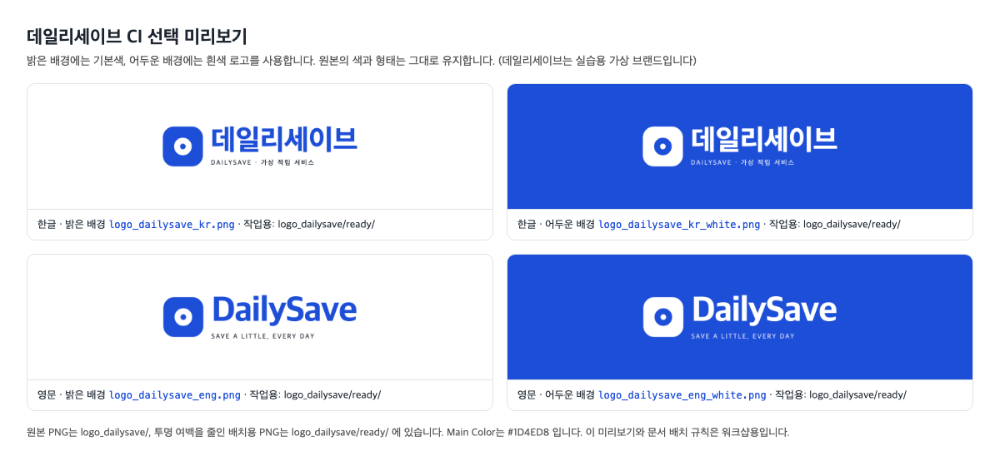
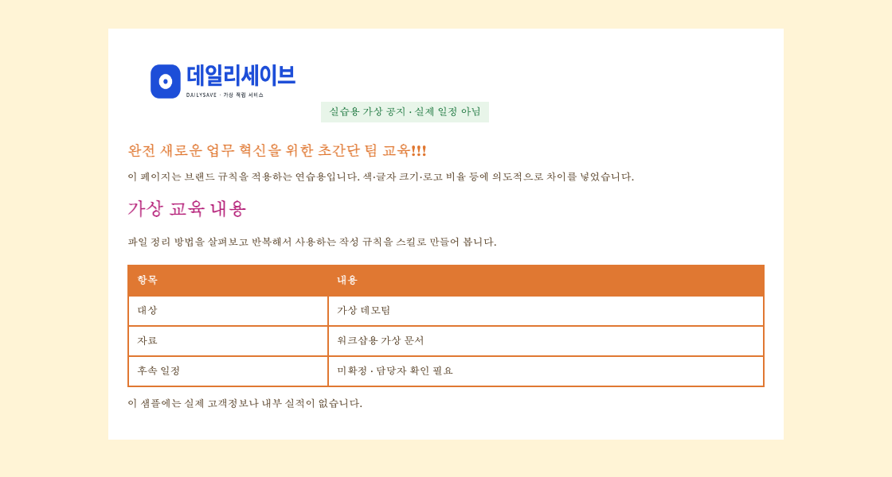

모듈 2는 새 프로젝트에서 진행합니다. 사이드바의 프로젝트 → 새 프로젝트에서 이름을 스킬 실습으로 정하고, 폴더 사용으로 sample_data가 들어 있는 실습 폴더를 연결합니다. 앞에서 만든 데일리세이브 프로젝트의 지침이 결과에 섞이지 않게 하기 위해서입니다.
스킬이란 무엇인가
SKILL.md 파일에 아래 내용을 적습니다. 필요한 양식·용어집·로고도 함께 묶을 수 있습니다.
| 구성 | 역할 |
|---|---|
| 이름 · name | 목록에서 스킬을 찾고 요청할 때 쓰는 이름 |
| 설명 · description | 어떤 작업에서 이 스킬을 사용할지 안내 |
| 본문 | 작업 순서·결과 형식·지켜야 할 규칙 |
등록한 스킬은 대화에서 이름을 지정해 사용할 수 있습니다. 공개된 스킬을 받아 쓰거나, 필요한 규칙으로 고쳐 나만의 스킬을 만들 수 있습니다.
공개 스킬 추가해서 쓰기
- eli5: “Explain Like I’m 5”의 줄임말입니다. 처음 접하는 주제를 큰 그림과 짧은 설명으로 풀어 주는 HTML 아티팩트를 만듭니다. 스킬 원문
- internal-comms: 주간 보고·사내 공지·FAQ 등 내부 공유 글을 형식과 말투에 맞춰 작성하는 스킬입니다. 글의 종류에 따라 참고 지침을 골라 씁니다. 공식 예제
새 대화에서 아래 프롬프트를 보냅니다. Claude가 공개 페이지의 SKILL.md를 읽고 내 스킬로 저장합니다.
다음 Skill을 내 스킬에 저장해줘. https://github.com/anthropics/claude-plugins-community/blob/main/eli5/skills/eli5/SKILL.md
저장하기 전에 Claude가 보여 주는 스킬 이름(eli5)과 하는 일을 확인합니다. 파일 삭제·외부 전송 지시가 있는 스킬은 저장하지 않습니다.
사용자 지정 → 스킬 → 내 항목에서 eli5가 보이는지 확인합니다. 입력창의 + → 스킬 목록에도 나타납니다.
참고 · 스킬 파일(ZIP·SKILL.md)을 직접 올리는 방법
Claude가 만든 스킬 ZIP이나 내려받은 SKILL.md는 직접 올려 등록할 수도 있습니다.
- 사용자 지정 → 스킬에서 추가 → 스킬 업로드를 선택합니다.
SKILL.md또는 스킬 폴더를 묶은 ZIP을 올립니다.- 이름·설명을 확인하고 저장을 누릅니다.



입력창에 /eli5를 입력하고, 이어서 설명할 내용을 적습니다.
/eli5 아래 공지를 처음 읽는 팀원에게 설명해줘. 조건과 기한은 원문 그대로 유지해줘. [가상 공지] 차기 정산 주기부터 가맹 파트너 대상 정산 마감 기준일이 익월 영업일 3일에서 2일로 단축 적용되며, 기준일까지 미승인된 건은 차차월 정산으로 이연 처리됩니다. 이연 건은 별도 고지 없이 처리됩니다.
확인: 큰 그림과 짧은 설명으로 정리한 화면이 만들어지고, 마감 3→2영업일, 미승인 건의 차차월 이연, 별도 고지 없음이 모두 남아 있는지 봅니다.
이번에는 사용자 지정의 스킬 목록에서 검색해 설치합니다.
- 사이드바에서 사용자 지정을 엽니다.
- 스킬 탭에서 탐색을 선택하고, 오른쪽 위 검색 아이콘을 눌러
internal-comms를 입력합니다. - 검색 결과의 internal-comms 카드에서 +를 눌러 추가합니다.
- 내 항목에
internal-comms가 보이는지 확인합니다.

확인: 목록에 internal-comms가 표시됩니다. 2.3에서 이 스킬을 사용하고 팀 공유문 규격으로 고칩니다.
internal-comms 스킬의 SKILL.md 파일 전문 보기
모든 스킬에는 SKILL.md 파일이 필요합니다. 이 파일은 두 부분으로 구성됩니다: Claude에게 스킬을 언제 사용할지 알려주는 --- 마커 사이의 YAML frontmatter와, 스킬이 실행될 때 Claude가 따르는 지침이 포함된 markdown 콘텐츠입니다. 디렉토리 이름(또는 frontmatter name을 설정한 경우 해당 값)이 입력하는 명령이 되고, description은 Claude가 스킬을 자동으로 로드할지 결정하는 데 도움이 됩니다.
| 부분 | 아래 파일에서 | 역할 |
|---|---|---|
| YAML frontmatter | 맨 위 --- 사이의 name · description · license | 언제, 어떤 이름으로 불러올지 |
| markdown 콘텐츠 | ## When to use this skill부터 끝까지 | 불러온 뒤 따를 순서와 규칙 |
---
name: internal-comms
description: A set of resources to help me write all kinds of internal communications, using the formats that my company likes to use. Claude should use this skill whenever asked to write some sort of internal communications (status reports, leadership updates, 3P updates, company newsletters, FAQs, incident reports, project updates, etc.).
license: Complete terms in LICENSE.txt
---
## When to use this skill
To write internal communications, use this skill for:
- 3P updates (Progress, Plans, Problems)
- Company newsletters
- FAQ responses
- Status reports
- Leadership updates
- Project updates
- Incident reports
## How to use this skill
To write any internal communication:
1. **Identify the communication type** from the request
2. **Load the appropriate guideline file** from the `examples/` directory:
- `examples/3p-updates.md` - For Progress/Plans/Problems team updates
- `examples/company-newsletter.md` - For company-wide newsletters
- `examples/faq-answers.md` - For answering frequently asked questions
- `examples/general-comms.md` - For anything else that doesn't explicitly match one of the above
3. **Follow the specific instructions** in that file for formatting, tone, and content gathering
If the communication type doesn't match any existing guideline, ask for clarification or more context about the desired format.
## Keywords
3P updates, company newsletter, company comms, weekly update, faqs, common questions, updates, internal comms본문의 examples/ 문서(3P 업데이트·뉴스레터·FAQ·일반 공지)를 글의 종류에 맞게 골라 따르도록 되어 있습니다.
대표 스킬 8개 · 역할과 활용 예시
| 출처·스킬 | 하는 일·활용 예시 |
|---|---|
| 공식 · internal-comms | 사내 소통 양식을 적용합니다. 주간 업데이트·공지·FAQ 초안에 활용합니다. |
| 공식 · discernment-nudge | 결론 전에 다시 확인할 질문을 2~3개 제시합니다. 숫자·가정 검토를 돕지만 사실 검증을 보장하지는 않습니다. |
| 공식 · doc-coauthoring | 맥락 확인·섹션 작성·독자 관점 검토를 거쳐 제안서나 정책서를 함께 만듭니다. |
| 공식 · theme-factory | 색·글꼴 테마를 골라 문서나 슬라이드에 적용합니다. 회사 말투나 이후 모든 결과물에 자동 적용되는 규칙은 아닙니다. |
| 공식 · brand-guidelines | 공개본은 Anthropic의 브랜드 규격입니다. 2.4에서는 제공된 가상 브랜드(데일리세이브) 규격으로 별도 스킬을 만듭니다. |
| 공식 · skill-creator | 새 스킬을 작성하고 기존 스킬의 절차·발동 조건을 고칩니다. |
| 커뮤니티 · eli5 | 배경지식이 없는 사람에게 큰 그림과 적은 글로 설명합니다. 대상별 말투 변경은 추가로 요청합니다. |
| 커뮤니티 · superpowers | 계획·실행·검증을 나누는 개발 작업용 스킬 모음입니다. 업무 절차 설계에 참고하며 오늘 설치하지 않습니다. |
설치한 스킬은 두 가지 방법으로 부릅니다. eli5로 비교해 봅니다.
| 방법 | 어떻게 | 언제 좋은가 |
|---|---|---|
| ① 설명과 맞게 요청 | 스킬 이름 없이, 스킬의 description과 일치하는 내용을 프롬프트에 씁니다. Claude가 맞는 스킬을 골라 불러옵니다. | 자주 쓰는 일을 자연스럽게 맡길 때 |
| ② 이름으로 직접 호출 | 입력창에 /스킬이름을 쓰고 이어서 요청을 적습니다. | 확실히 그 스킬을 쓰게 하고 싶을 때 |
① 설명과 일치하는 내용을 프롬프트에: eli5의 description은 "무언가가 어떻게 작동하는지 아주 쉬운 그림 설명을 요청할 때"입니다. 스킬 이름을 쓰지 않고 그 내용대로 요청합니다.
MCP가 어떻게 작동하는지 처음 듣는 사람도 이해할 수 있게 아주 쉬운 그림 설명으로 보여줘.
② 스킬 이름으로 직접 호출:
/eli5 MCP가 어떻게 작동하는지
확인: ①에서 대화에 eli5 스킬을 사용했다는 표시가 나타나는지 봅니다. 자동으로 불리지 않으면 ②처럼 이름으로 부릅니다. 자동 호출이 잘 되려면 description에 하는 일과 쓰는 상황이 분명해야 합니다.
팀 공유문 스킬로 고치기
2.2의 STEP 4에서 internal-comms 스킬을 추가했습니다. 입력창의 + → 스킬에서 목록에 있는지 먼저 확인합니다.
프로젝트 또는 폴더에서 sample_data가 들어 있는 폴더를 연결합니다. 원본 스킬은 sample_data/skills/internal-comms/에 준비되어 있습니다.
internal-comms 스킬로 가상 "데일리세이브 운영팀"의 3P 주간 업데이트를 작성해줘. 먼저 sample_data/skills/internal-comms/SKILL.md와 sample_data/skills/internal-comms/examples/3p-updates.md를 실제로 읽고 그 양식을 따라줘. sample_data가 보이지 않으면 파일 누락으로 판단하지 말고, 자료가 들어 있는 폴더 연결을 먼저 안내해. [범위] - 작성 기준: 2026-09-03, 읽는 사람: 팀 매니저 - 아래 가상 자료 세 개만 사용해. sample_data/raw_meeting_notes.txt sample_data/raw_meeting_notes_2.txt sample_data/finance/budget_variance.csv [작성] - 원본 3P 양식대로 Progress·Plans·Problems를 각각 1~3문장으로 써줘. - 확정된 진척과 초안·제안을 구분하고, 미확정인 것은 표시해. - 자료에 없는 완료·승인·날짜를 추가하지 마. - 예산 CSV는 전사 부서별 자료(백만원)이고 회의록 예산은 프로젝트 금액(억)이야. 연결 근거가 없으면 엮지 말고 "연결 확인 필요"로 남겨줘. - 최종 답변은 한국어 업데이트 본문만 보여줘. 근거 표와 추가 해설은 붙이지 마.
확인: 결과의 Progress·Plans·Problems에서 각각 아래 내용을 찾습니다.
| 결과 영역 | 여기서 볼 것 | 이번 자료의 예시 |
|---|---|---|
| Progress | 이미 진행한 일·확정된 결정 | MVP 3종 확정, 30일 리텐션 KPI 확정, 예산 초안 접수 |
| Plans | 앞으로 할 일·목표 일정 | 개발 일정표 9/8, 상표 대안·예산배분안 9/10, 9/11 회의에서 데모데이 최종일 결정 예정 |
| Problems | 막힌 일·미확정·추가 확인 | 서비스명 미확정, 10월 첫주 데모 연기 제안, 예산 최종 승인 미정, 전사 CSV와 프로젝트의 연결 확인 필요 |
예산 초안을 받은 것은 Progress에, 예산 승인이 남은 것은 Problems에 해당합니다.
3P 내용 예시
Progress: 자동적립·목표설정·리워드알림을 MVP로 확정했습니다. 주지표는 30일 리텐션, 가입자수는 보조지표입니다.
Plans: 개발 일정표는 9/8, 상표 대안과 채널별 예산안은 9/10까지 정리할 예정입니다. 데모데이 최종일은 9/11 회의에서 결정할 예정입니다.
Problems: 서비스명은 유사상표 검토가 남아 있고, 데모데이는 10월 첫주로 연기 제안 중입니다. 초기 프로모션 2.5억은 초안이며, 전사 예산 CSV와 프로젝트의 연결은 확인이 필요합니다.
sample_data/skills/internal-comms/SKILL.md와 sample_data/skills/internal-comms/LICENSE.txt를 읽고, 팀 공유문에 맞춘 "team-share" 스킬을 새로 만들어줘. 원본 폴더와 등록된 스킬은 그대로 둬. SKILL.md의 YAML name은 team-share로 지정하고, description에 역할과 발동 조건을 적어줘. 오늘은 아래 공통 규격을 사용해. 새 업무 아이디어를 물어보지 마. [역할] 워크샵이나 학습 결과를 팀원에게 설명하는 공유문 초안을 작성한다. [발동] "팀 공유문", "워크샵 공유자료 정리" 요청에 사용한다. [출력 순서] 1. 핵심 내용 3줄 2. 팀 업무에서 해볼 일 3개 3. 이번에 만든 자료: 파일명 / 용도 4. 만든 스킬: 역할 / 입력 자료 / 호출 예시 5. 사람이 확인할 것 6. 첨부할 자료 목록 [규칙] - 사실과 수치는 입력 자료를 근거로 쓰고, 없으면 "확인 필요"로 둔다. - 업무 예시는 가상으로 작성한다. 실제 고객정보나 미공개 정보를 넣지 않는다. - 메일·메신저 발송, Confluence 발행은 하지 않는다. 초안만 만든다. - 원본을 수정·삭제하지 않고 output에 새 파일로 저장한다. - 업무 내용 중 확인할 사항은 5번에만 모으고, 본문 뒤에 같은 목록을 반복하지 않는다. [이번 작업의 저장 방식] - 기존 파일은 수정·덮어쓰지 마. 임시 파일 정리를 포함해 파일·폴더를 삭제하지 마. - output/skills/team-share/에 SKILL.md를 새로 만들어줘. 폴더가 이미 있으면 output/skills/실습2/team-share/처럼 번호를 늘려 새 경로를 사용해. - 원본 LICENSE.txt를 내용 변경 없이 함께 복사하고, SKILL.md의 license는 이 파일을 참조하게 해. 본문에는 원본 internal-comms를 팀 공유문 규격으로 수정한 사본임을 한 줄로 남겨줘. - 필요한 작성 규칙은 references/에 새로 작성해. 원본의 examples/는 복사하지 않아도 돼. SKILL.md에서는 이번에 실제로 만든 파일만 상대 경로로 참조하고, 쓰지 않는 원본 참조는 제거해. - ZIP은 Python의 zipfile과 io.BytesIO로 메모리에서 완성해. 다시 열어 SKILL.md·LICENSE.txt와 참조한 파일이 모두 들어 있고 읽히는지 확인해. - 확인한 ZIP을 output/team-share.zip에 새 파일 생성 모드(xb)로 한 번만 저장해. ZIP 이름이 겹치면 번호를 붙이고, ZIP 최상위 폴더명과 YAML name은 team-share로 유지해. - 디스크에 임시 ZIP을 만들거나 이름을 바꾸는 압축 방식은 사용하지 마. 정상적으로 완료되면 변경된 규칙과 스킬 폴더·ZIP 경로만 표로 보여줘. 복사하지 않는 examples/나 해결된 제작 이력을 "확인 필요"로 덧붙이지 마. sample_data가 보이지 않으면 파일 누락으로 판단하지 말고, 자료가 들어 있는 폴더 연결을 먼저 안내해. 실제 파일 생성에 실패한 경우에는 성공한 것으로 쓰지 마.
STEP 2 결과를 확인한 같은 대화에서 아래 프롬프트를 보냅니다.
해당 Skill을 "team-share" 스킬로 전역에 저장해줘.
확인: 사용자 지정 → 스킬 → 내 항목에 team-share가 나타납니다.
저장이 제한되면 규칙을 프로젝트 지침으로 사용합니다. 이 공유문 규격은 3.1에서 워크샵 자료를 정리할 때 다시 사용합니다.
새 대화에서 /team-share로 STEP 1과 같은 자료를 정리합니다.
/team-share 가상 "데일리세이브 운영팀"의 팀 공유문을 작성해줘. [범위] - 작성 기준: 2026-09-03, 읽는 사람: 팀 매니저 - 아래 가상 자료 세 개만 사용해. sample_data/raw_meeting_notes.txt sample_data/raw_meeting_notes_2.txt sample_data/finance/budget_variance.csv
확인: 결과가 team-share의 출력 순서(핵심 내용 3줄 → 팀 업무에서 해볼 일 → 만든 자료 → 만든 스킬 → 사람이 확인할 것 → 첨부 자료)를 따르는지 보고, STEP 1의 3P 업데이트와 무엇이 달라졌는지 비교합니다.
브랜드 가이드 스킬 만들기
2.4는 새 프로젝트에서 진행합니다. 프로젝트 → 새 프로젝트에서 이름을 브랜드 가이드 실습으로 정하고, 같은 실습 폴더를 연결합니다.
사용할 자료
| sample_data/brand/ | 용도 |
|---|---|
| logo_dailysave/ | CI 원본 4종과 ready 폴더의 배치용 PNG (가상 브랜드) |
| CI_미리보기.html | 한글·영문, 밝은 배경·어두운 배경 조합 보기 |
| 데일리세이브_브랜드규격_실습용.md | CI 선택과 문서·슬라이드 작성 규칙 |
| 브랜드_검수용_안내문.html | 색·글자·로고 비율을 고쳐볼 가상 안내문 |
밝은 배경에는 기본색 CI, 어두운 배경에는 흰색 CI를 사용합니다. 아래 순서로 한글·영문 파일이 준비되어 있습니다.

로고·CI 색은 sample_data/brand/데일리세이브_브랜드규격_실습용.md의 CI 규칙을 따릅니다(가상 브랜드이므로 실제 업무에서는 자사 공식 CI 안내로 대체합니다). 글꼴·크기·문서 배치는 실습용 규칙입니다.
아래 자료로 "daily-save-brand-guide" 스킬을 만들어줘. - sample_data/brand/데일리세이브_브랜드규격_실습용.md - sample_data/brand/logo_dailysave/ (한글·영문 기본색·흰색 CI, ready 작업용 파일 포함) - sample_data/brand/CI_미리보기.html [스킬 규칙] - name은 daily-save-brand-guide. description에 문서·HTML·PPT의 데일리세이브 CI 적용·점검에 쓴다고 적어. - 먼저 규격을 읽고, 브랜드 규격의 CI 기준과 워크샵용 문서 규칙을 구분해 적용해. - 언어와 배경에 맞는 CI 파일을 선택해. 밝은 배경에는 기본색, 어두운 배경에는 흰색 파일을 써. - 배치에는 ready 폴더의 PNG를 사용하고, 색·형태·가로세로 비율은 바꾸지 마. - 원문 사실·수치·미확정 표시를 보존하고, 적용한 CI 파일명과 선택 이유를 알려줘. - 원본 수정·삭제와 외부 발송·게시 없이 output에 새 파일로 저장해. [묶을 파일] output/skills/daily-save-brand-guide/SKILL.md output/skills/daily-save-brand-guide/references/brand-guide.md output/skills/daily-save-brand-guide/references/CI_미리보기.html output/skills/daily-save-brand-guide/assets/logo_dailysave/ (제공 폴더 전체 복사, ready 포함) output/skills/daily-save-brand-guide/README.md (용도·사용 예시) SKILL.md는 ---로 감싼 YAML의 name·description으로 시작하고, 자료는 스킬 안의 상대 경로로 참조해. 복사한 규격 문서의 입력 폴더 경로도 스킬에 묶인 자료 경로로 맞춰줘. 같은 이름의 내 스킬이 있으면 비교해 보완하고 이전 버전은 보존해. 폴더를 output/daily-save-brand-guide.zip으로 묶어줘. ZIP의 최상위는 daily-save-brand-guide/ 폴더로 하고, 이름이 겹치면 번호를 붙여 새로 저장해. 끝나면 적용 규칙과 ZIP에 넣은 파일 목록을 보여줘.
ZIP에 규격 문서와 CI 원본·ready 폴더가 함께 들어 있는지 확인합니다.
STEP 1 결과를 확인한 같은 대화에서 아래 프롬프트를 보냅니다.
해당 Skill을 "daily-save-brand-guide" 스킬로 전역에 저장해줘.
확인: 사용자 지정 → 스킬 → 내 항목에 daily-save-brand-guide가 나타납니다.
제공된 안내문 미리보기

daily-save-brand-guide 스킬로 sample_data/brand/브랜드_검수용_안내문.html을 고쳐서 output/브랜드_적용_안내문.html에 새로 저장해줘. - 상단 안내 영역은 파란 배경에 한글 흰색 CI, 본문은 흰 배경에 한글 기본색 CI를 사용해. - CI는 스킬의 assets/logo_dailysave/ready/에 있는 PNG를 넣어줘. - 원문의 사실과 "미확정" 표시는 유지해. - 로고·CSS를 HTML 안에 넣어 인터넷 없이 열리게 해줘. - 어느 영역에 어떤 CI를 썼는지, 색·글꼴·로고 비율이 어떻게 바뀌었는지 표로 알려줘.
원본과 결과 HTML을 열어 상단의 흰색 CI·본문의 기본색 CI, 로고 비율, 글자 크기를 비교합니다. 가상 내용과 「미확정」 표시도 유지되어야 합니다.
3.1에서는 같은 스킬로 영문 CI를 적용한 워크샵 PPT를 만듭니다.
[Bonus] 카드뉴스 스킬 만들기
새 대화에서 아래 카드뉴스 제작 가이드를 붙여넣어 보냅니다. 내용이 길어 접혀 있으니 전체 펼치기로 확인하고, 복사 버튼으로 전체를 복사합니다.
# 카드뉴스 제작 가이드 ## 1. 보편 제작 원칙 - 장르와 주제에 관계없이 모든 카드뉴스에 적용되는 규칙 ### 원칙 1: - 카드뉴스 표지가 조회수를 결정한다. - 표지에서 사람들의 시선을 끌어야 하며 두번째 슬라이드로 넘어가도록 내용을 남겨야 한다. - 카드뉴스는 탐색 피드에서 대부분 노출된다. ### 원칙 2: - 떡상하는 카드뉴스의 구조는 다음과 같다. Hook (표지) → 핵심 내용 → CTA (마무리) - 스토리텔링, 공감요소는 중간에 채운다. - 후킹요소와 CTA는 어떤 테마든 반드시 존재해야 한다. ### 원칙 3: - 한 장에 전달하려는 메시지는 하나여야 한다. - 불필요한 내용을 제거하고 가장 요약된 상태로 제공하는 것이 핵심. - 텍스트와 시각 요소가 같은 메시지를 가리켜야 하며, - 한 장에서 두 가지를 말하려 하면 아무것도 전달되지 않는다. ### 원칙 4 — 디자인 기본 규칙: - 폰트: Pretendard / Noto Sans KR - 여백: 균일하게 유지, 정렬 기준 고정 - 레이아웃: '4-4. 레이아웃 구조 패턴'을 참고해서 내용에 맞는 레이아웃 구조 최대 2개 이상 사용, 하단에 사용자 아이디 푸터 필수 배치 #### 4-1. 가독성 (Readability): '보는' 것이 아니라 '읽히는' 디자인 - **위계 설정 (Typography Hierarchy)**: 제목 / 본문 / 태그·푸터의 폰트 크기와 굵기를 명확히 차별화. 제목은 본문보다 최소 1.5배 이상 크고 두꺼워야 시선이 자연스럽게 흐른다. - **행간·자간**: 행간(`line-height`) 1.4~1.6배 유지. 본문 자간(`letter-spacing`)은 살짝 좁게(-0.02em) 설정하면 가독성이 상승한다. - **대비 최적화**: 배경과 텍스트의 명도 차이를 확실하게. 밝은 배경 위에는 무거운 블랙보다 짙은 그레이(#111~#333)를 사용해 눈의 부담을 줄인다. #### 4-2. 전체적인 조화 (Overall Harmony): 브랜드 정체성을 유지하는 일관성 - **톤앤매너 유지**: 메인 컬러와 서브 컬러의 사용 범위를 모든 슬라이드에 동일하게 적용. 강조 키워드는 항상 같은 컬러 계열을 사용해 독자가 본능적으로 중요한 정보임을 인지하게 한다. - **여백의 일관성 (Safe Zone)**: 모든 슬라이드의 상하좌우 여백(Margin)을 고정값으로 유지. 슬라이드를 넘길 때 텍스트·로고 위치가 흔들리면 전문성이 떨어져 보인다. - **UI 요소 통일**: 태그의 둥글기(border-radius), 화살표 아이콘 크기, 푸터 위치를 고정해 전체적인 시각적 리듬감을 부여한다. #### 4-3. 구성요소 비율 (Component Ratio): 시각적 균형을 만드는 8:2 법칙 - **콘텐츠 vs 여백**: 텍스트·그래픽 요소는 슬라이드 면적의 70~80%를 넘지 않는다. 나머지 20~30%의 여백이 메인 메시지를 돋보이게 한다. - **상중하 수직 배분**: - 상단 15% — 태그 및 카테고리 (시각적 앵커) - 중앙 70% — 메인 타이틀 및 핵심 본문 (정보 전달의 핵심) - 하단 15% — 푸터 및 내비게이션 (브랜딩 및 행동 유도) - **텍스트 밀도**: 한 문장은 최대 2줄을 넘지 않도록 나눈다. 문단 사이의 간격은 제목-본문 간격보다 넓게 배치해 시각적 숨통을 틔운다. #### 4-4. 레이아웃 구조 패턴: - 상단 태그 / 중앙 메인 카피 / 보조 카피 / 중앙 하이라이트 텍스트 박스 / 사용자 계정 푸터 및 화살표 아이콘 - 좌상단 태그 / 질문형 메인 카피 / 3단 인터페이스 그래픽 / 번호순 상세 설명 박스 / 사용자 계정 푸터 및 화살표 아이콘 - 좌상단 태그 / 단계별 메인 카피 / 보조 카피 / 아이콘+설명 리스트 / 하단 강조(Tip) 박스 / 사용자 계정 푸터 및 화살표 아이콘 - 좌상단 태그 / 좌정렬 메인 카피 / 보조 카피 / 저장 유도 배지 / 사용자 계정 푸터 및 화살표 아이콘 - 좌상단 태그 / 메인 카피 / 핵심 공식(텍스트) / 상황별 프롬프트 카드 2종 / 사용자 계정 푸터 및 화살표 아이콘 - 중앙 태그 / 중앙 정렬 메인 카피 / 보조 카피 / 알약형 CTA 버튼 / 하단 액션 아이콘(저장, 공유) / 사용자 계정 푸터 - 카테고리 태그 / 메인 카피 / 보조 카피 / 그래픽 요소 / 사용자 계정 푸터 #### 디자인 규칙 : - 색상 정확도, 요소 간 간격 일관성, 내부 padding 균형 --- ## 2. 스크립트 작성 규칙: ### 규칙 1 — 본문 텍스트 밀도 기준 : 각 슬라이드의 본문 텍스트는 반드시 아래 기준을 충족해야 한다. - 리스트형 슬라이드: 항목당 1~2문장 분량의 설명 포함 (단순 키워드 나열 금지. 각 항목에 수치·이유·예시 중 하나 이상 포함) - 서술형 슬라이드: 최소 3~4문장 분량의 본문 작성 - 숫자·통계가 있는 경우: 맥락 설명 1문장 반드시 추가 예) ❌ "매출 6,000억 원" ✅ "매출 6,000억 원 — 창업 9개월 만에 달성한 수치로, 시리즈 A 유치 없이 AI 도구만으로 운영한 결과" ### 규칙 2 — 원문 충실도 : 기사·원고를 기반으로 제작할 경우, 각 슬라이드의 본문은 원문에서 해당 슬라이드 주제와 관련된 핵심 정보를 빠짐없이 추출해 담아야 한다. - 원문의 사례, 인용문, 수치, 배경 설명을 슬라이드에 분산 배치 - 슬라이드 한 장당 원문 정보 최소 2~3개 포인트 포함 - "내용 요약"이 아니라 "내용 전달"이 목표임을 기억할 것 ### 규칙 3 — 슬라이드 수 결정 기준 : 원문의 정보량이 많을 경우, 슬라이드 수를 늘려서 각 장의 밀도를 유지한다. 정보를 압축해 슬라이드 수를 줄이지 말 것. 정보량 기준: - 짧은 원고(500자 이하): 5~6장 - 중간 원고(500~1500자): 7~9장 - 긴 원고(1500자 이상): 10~13장
참고할 웹사이트 주소나 이미지를 함께 붙여넣거나 첨부하고, 카드뉴스로 만들 원고(주제·기사·메모)도 같이 보냅니다.
다음 웹사이트 혹은 이미지의 디자인 포인트 분석 후, 분석 포인트를 적용해서 이미지를 생성해줘. 카드뉴스 스크립트의 모든 구성 요소 포함해. 사이즈는 1080x1080이고, 이미지 제작해서 html로 뽑아줘. Html로 뽑은 후 별도 폴더에 png로도 저장해
확인: 1080×1080 크기의 HTML과, 별도 폴더에 저장된 PNG가 함께 만들어졌는지 봅니다.
결과를 보며 글자 크기·여백·색 같은 부분을 같은 대화에서 고칩니다. 마음에 들면 아래 프롬프트로 저장합니다.
해당 Skill을 "soomin-card-news" 스킬로 전역에 저장해줘.
soomin 대신 내 이름이나 계정명을 넣어 나만의 스킬 이름으로 저장해도 됩니다. 다음부터는 원고만 주고 /soomin-card-news로 같은 방식의 카드뉴스를 만들 수 있습니다.